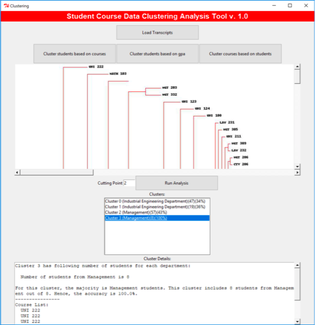

Student - Course Data Clustering and Analysis
A tool that clusters university students based on different metrics.
Student - Course Data Clustering and Analysis
This project uses data from university students' transcripts (provided in Excel sheets) to cluster similar students and courses together.
The three clustering categories used were:
- Clustering students based on courses: This groups students who have taken similar courses together
- Clustering students based on GPA: This groups students who have similar academic performance together
- Clustering courses based on students: This groups courses which are taken by most students together
The program allows the user to analyze these formed clusters (after import of data) in different levels (cutting points). Each level manifests a hierarchy in the clustering tree. The deeper the level is, the more results (clusters) will appear.
This Project's GitHub Link